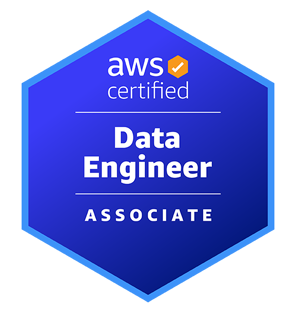

Certifications & Training
Azure Solutions Architect Expert (AZ-305)

AWS Solutions Architect Associate
CKA / CKS (KodeKloud)
Azure DevOps Engineer Expert (AZ-400)
ITIL v4 Foundation
Senior DevOps Engineer with 12+ years of experience in Azure, AWS, Kubernetes, Terraform, GitOps, and SRE practices, driving high availability, cost optimization, faster delivery, and reduced operational risk across large-scale production environments.
Enterprise K8s stabilization for 50+ clusters using ArgoCD.
View Problem-Action-Impact →Self-service automation portal reducing task time by 80%.
View Problem-Action-Impact →Migrated on-prem monolithic apps to microservices on AWS.
View Problem-Action-Impact →Azure Solutions Architect Expert (AZ-305)

AWS Solutions Architect Associate
CKA / CKS (KodeKloud)
Azure DevOps Engineer Expert (AZ-400)
ITIL v4 Foundation